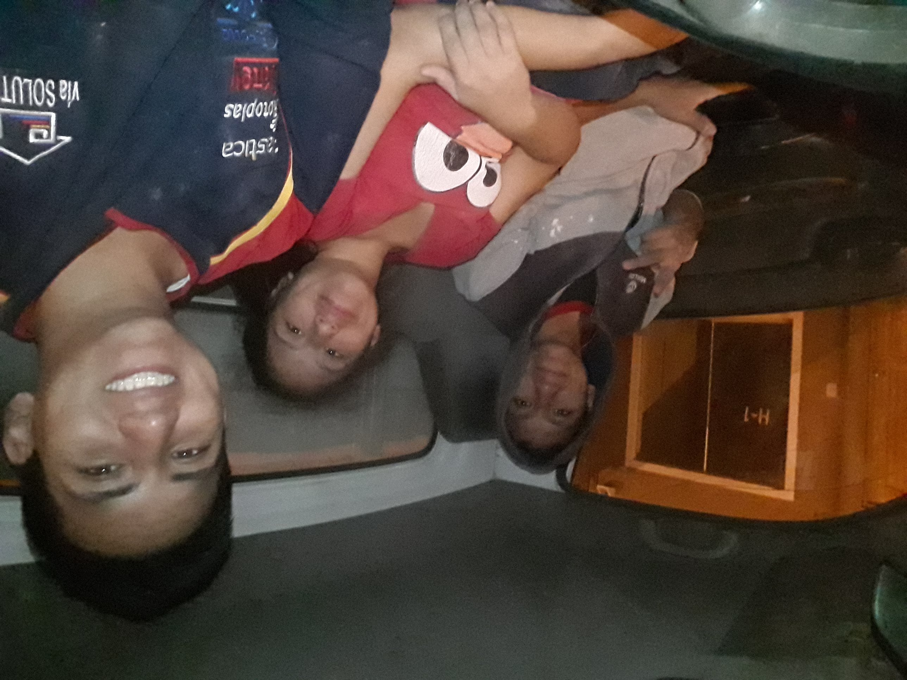

I have decided to study Business Management because I want to become a good leader. I got inspired by my parents, successful managers in a Peruvian company.
I worked in my parents’ Hardware store for many years. I worked as a salesperson, delivery person, and wire-transfer clerk. I learned that to become a successful business, processes and a good environment of work should exist. Also, I realized that to run a company. I have to persevere during difficult times. So, I decided to take a challenging path by studying my career in a different language because I have noticed the difference that studies can make in your life; it opens your mind to think of better solutions and make better decisions. It took me a year to learn English and apply to LDS Business College, but I did it.
Also, I have attended the conservatory of music for two years. Music is a complex discipline because it requires too much time to practice. My specialization was in Piano, so I practiced four hours a day to get better. Moreover, I did a service teaching an English class for four months in an institute in my city; this service helped me gain communication skills and be patient with students. All these experiences have taught me that everything you want to achieve has a cost, but it is worth the effort.
Therefore, I want to get my bachelor’s degree at BYU Idaho to be prepared to run my dad’s company in the future. While I am at LDS Business College, I have learned that Business Management is not about giving orders. Business Management is about leading and guiding. And that is the reason I want to study that career.
 My siblings and I working in my parents' companySee my LinkedIn page.